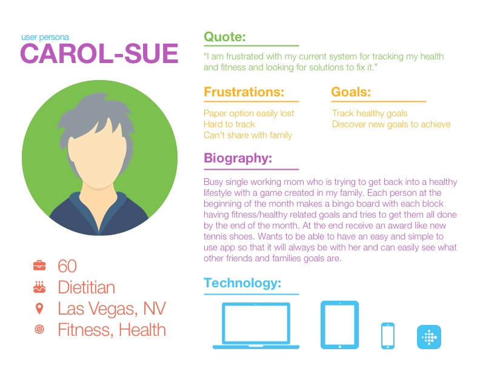
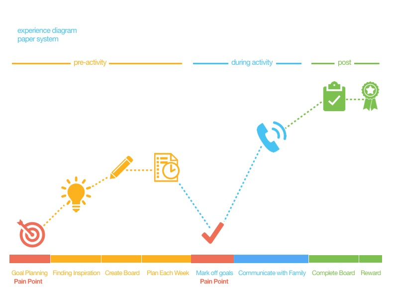
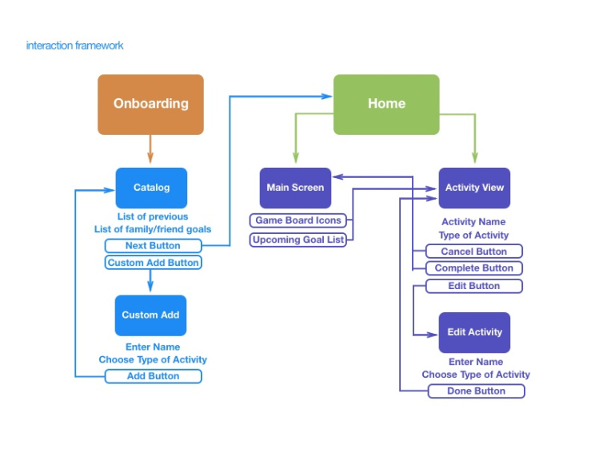
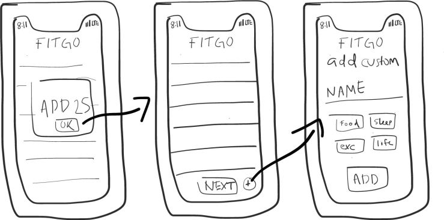
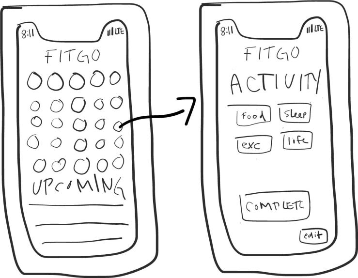
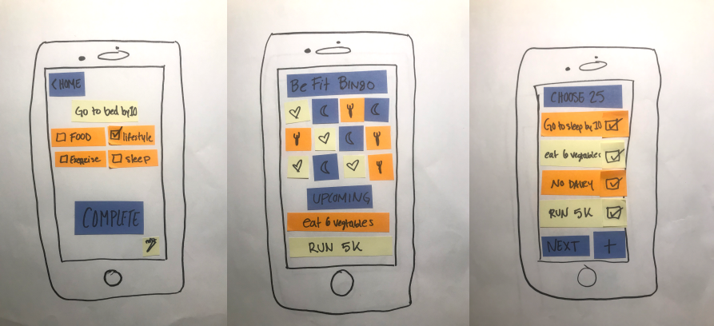
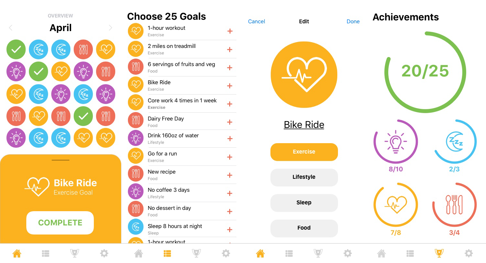
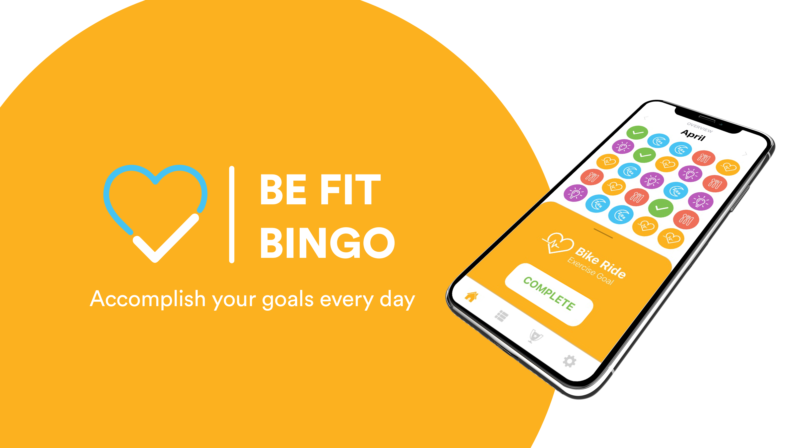
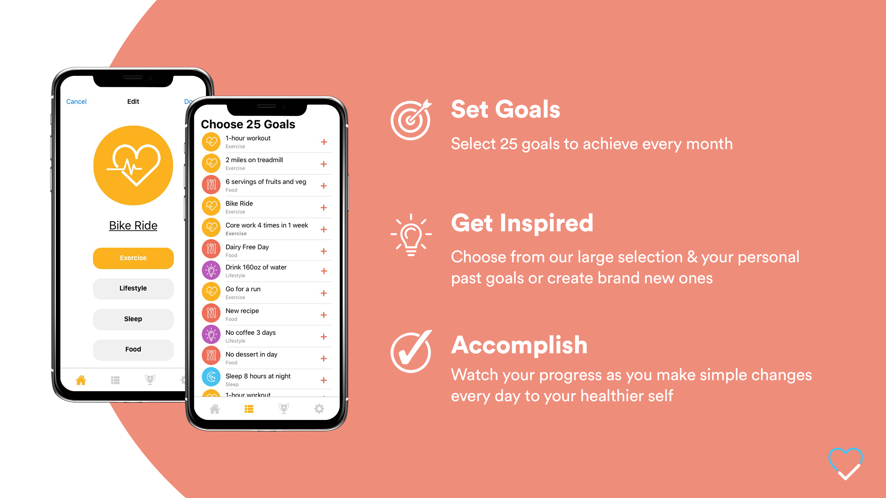
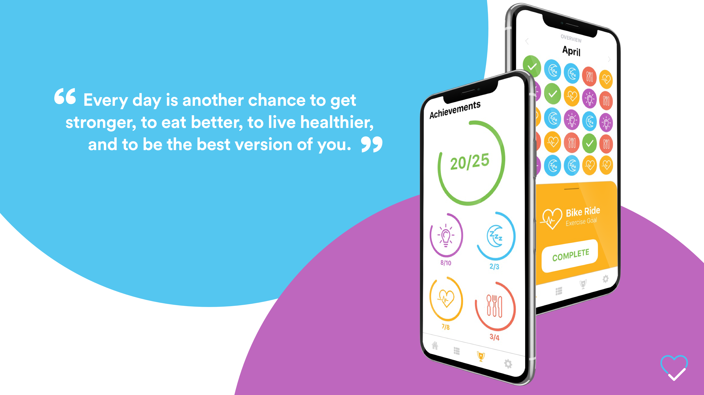

Introduction
The following project was designed for my User Interface and Interactive Design course. The goal of this project was to utilize user research and to make a mobile application that fulfills a user need. I also coded this app in Flutter to create a cross platform experience.
Tools
Sketch, Photoshop, Illustrator, Pen and Paper
Duration
Semester - Spring 2018
Process
User Research
This project started with user research prior to coming up with an idea. I first conducted a directed interview with three individuals. Two interviews were conducted over the phone and the third was in person.
The next step I took was to follow up with my the candidates and have them walk me through their current process through an ethnographic interview. After this interview I settled on working on the fitness daily goal tracking app called Be Fit Bingo.
Persona
Interview Takeaways
After settling on the Be Fit Bingo App I decided to synthesize what the current system was that my user had in place. Be Fit Bingo is a bingo board that creates twenty five daily goals for a month in a five by five array. Every month the user sets a reward if they complete the twenty five goals during the month. The users goal is to have a sustainable model for achieving a healthier self through small iterative goals. The user has friends and family who also play Be Fit Bingo and they communicate about their progress and goals through the phone. The user also plans each Sunday which five goals will be accomplished during the week and on which days to keep on top of them. This system is all done on a regular sheet of paper with a bingo board grid printed on it.
According to the user, who is a dietitian, Be Fit Bingo finds a solution for 97% of people failing diets. Most people begin an all-encompassing diet and are overwhelmed by the drastic lifestyle change and thus will most likely “fail” at one part of the diet which can cause the entire diet to fail.
During my ethnographic interview I had my user send me examples of the paper activity board. This was helpful to see the current system in place to translate it into the mobile application.
Objective
Create an easy, simple and intuitive mobile application that would accomplish the same goals as the paper “game board” while addressing some of the pain point the user expressed during the interviews.
Pain Points to Solve
1. How to simplify to ideation and creation phase for daily goals?
2. How to track past daily goals for the user that were previously used?
3. How to manage and schedule which goals will be accomplished on which days?
4. How to have a collaborative nature for friends and family members using this system?
Experience Diagram
The experience diagram was made from the user research ethnographic interview of having the user walk me through the paper prototype. As you can see below the main pain points were found in the goal planning and marking off goals. This was due to the inability to see and log previous goals as well as losing the paper artifact or misplacing it when a goal was completed. Other areas that could be improved were the communication with family and the entire pre-activity phase.
Interaction Framework
Sketches
For the first step I sketched out many concepts to quickly iterate on ideas. With the previous user research and physical artifact in mind my final iteration on the sketching was done below.
 Paper Prototype
Using the sketch I made paper prototypes to conduct user tests. I used this paper prototype to have individuals walk through using the interface and explain to me what each stage of the process meant to them. After multiple successful user test's I knew that I had reached a viable solution to move into higher fidelity prototype.
Solution
Be Fit Bingo translated well from paper to mobile application while finding solutions for the pain points associated with the paper system. For the ideation and creation phase there is the “Choose 25 Goals” page that allows for the simple addition of new goals, keeps track of previous goals used and allows for group collaboration of the ideation phase with individuals in your network.
For the overview page I wanted a clean and minimalist user interface that could easily and quickly portray the necessary information to the user. This page also allows for simple user interaction with the gameboard to quickly mark off their daily goals. The achievements page adds another view to the necessary information for individuals who want to keep track of their progress for the month.
High Fidelity User Interface
For this user interface I created it mainly in sketch and the iconography in illutrator.
Invision Prototype
InVision LinkPitch Deck
  Flutter
Once the user research and interface was completed, I developed this app using Flutter. The link to my Github as well as a video screen recording is shown below. The final deliverable was a Flutter app with iOS and Android versions implimenting a Firebase authentication backend service and Firebase database.
Takeaways
From my User Interface and Interactive Design class, I learned how important the method and process of user research and user interface design are. When I design I am designing for the user, so starting with user research is essential to fully comprehend and understand the goals of the project. Using the user experience tool kit to your advantage is essential to having a deep conceptual understanding of the user in order to create the best product possible. Going through each step of ideation, prototyping, wireframing, interface design and finally prototyping allows us as designers to figure out issues and solutions at every point of the process and overall allows the solution to match the needs of the user. The focus is and should always be on the user and this process allows us to understand and practice that in every step of designing.